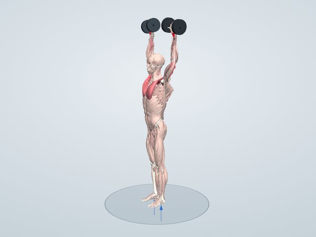

トレーニング図鑑
ショルダープレス
ダンベルを肩の高さから頭の上へ押し上げる種目です。肩(三角筋)と腕の後ろ(上腕三頭筋)が働きます。
一般に鍛えられる筋: 三角筋・上腕三頭筋・僧帽筋
3Dで動かして見る 無料で見られます

鍛えられる筋のしくみ
重りを頭の上へ押し上げる動きで、肩の三角筋(とくに前部と中部)と上腕三頭筋が働きます。腕を高く上げるには肩甲骨も上に回る必要があり、僧帽筋や前鋸筋がそれを行います。立って行うと、体幹の筋がバランスを取るためにも働きます。
働く筋(3Dモデルでの計算)
ダンベル8kg(片手・片脚あたり)で、体重60kgの人がゆっくり動かしたときに、それぞれの筋が出せる最大の力に対して何%の力を出すかの推定です。
- 三角筋 鎖骨部(前部)縮みながら60%
- 上腕三頭筋 外側頭縮みながら36%
- 上腕三頭筋 内側頭縮みながら36%
- 三角筋 肩峰部(中部)縮みながら31%
- 大胸筋 鎖骨部縮みながら22%
- 大胸筋 胸肋部長さを保って17%
- 浅指屈筋 上腕尺骨頭長さを保って13%
- 浅指屈筋 橈骨頭長さを保って13%
「縮みながら」は持ち上げるときに縮んで力を出す筋、「伸びながら」は伸ばされながら力を出す筋、「長さを保って」は姿勢を支える筋です。バーは筋力の50%でいっぱいになります。
やり方
- ダンベルを両手に持ち、肩の高さに構える
- 手のひらを前に向け、肘は体の横に張る
- 腕が伸びきる手前まで頭の上に押し上げる
- ゆっくり肩の高さまで下ろす
ポイント
- 腰を反らさず、おなかに力を入れる
- 肩をすくめずに押す
よくある間違い
- 腰を大きく反らせて押す
- ダンベルを下ろしきらない
回数と重さの目安
ダンベルで10〜12回を2〜3セット。
やさしくする方法
座って背もたれのあるベンチで行う。重さを軽くする。
きつくする方法
立って行う。片手ずつ行う。下ろすときに3秒かける。
注意すること
腰を反らして押し上げると腰に負担がかかります。腕を上げると肩が痛む人は、痛くない範囲までにとどめます。
やり方による効き方の違い
トレーニング図鑑では、次のやり方を切り替えて、働く筋の違いを3Dで比べられます。
- 肩を「すくめる」
- 肩をすくめて押すと、僧帽筋上部と肩甲挙筋も一緒に働きます。
同じ部位の種目


学習用の推定です。筋の働きは体格ややり方で変わり、実際の筋電図とは異なることがあります。痛みがあるときは無理をせず、専門家に相談してください。